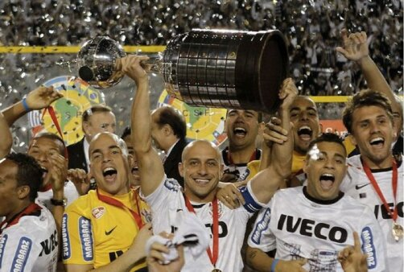

Há nove anos, Corinthians conquistou o título da Libertadores da América
Timão venceu o Boca Juniors por 2 a 0 no segundo jogo da decisão de 2012 e levantou a taça de forma invicta

O dia 4 de julho é celebrado pelos norte-americanos como o dia da Independência dos Estados Unidos. Já para a Fiel Torcida, é o dia da libertação. Porque foi assim que os torcedores corinthianos se sentiram nessa data, há exatos nove anos, quando o Corinthians enfim conquistou a tão sonhada Copa Libertadores da América.
Neste dia, em 2012, o Timão, que era na época o atual campeão brasileiro, chegou à inédita final do torneio sul-americano. Comandado pelo técnico Tite, o Alvinegro enfrentou na decisão o Boca Juniors, tradicional equipe argentina. Após um empate em 1 a 1 na primeira partida com gol de Romarinho aos 40 minutos do segundo tempo, em La Bombonera, em Buenos Aires (ARG), a decisão ficou para o estádio do Pacaembu.
A equipe alvinegra entrou em campo para um dos maiores jogos da centenária história do Corinthians com: Cássio; Alessandro, Chicão, Leandro Castán e Fábio Santos; Ralf, Paulinho, Danilo e Alex; Jorge Henrique e Emerson Sheik.
Diante de cerca de 40 mil pessoas, Corinthians e Boca terminaram o primeiro tempo empatados em 0 a 0. Na segunda etapa, porém, o cenário foi diferente, e a Fiel explodiu pela primeira vez aos oito minutos.
Em cobrança de falta, Alex levantou a bola em direção à meta adversária, para um toque sutil de cabeça de Jorge Henrique para trás. Após confusão na área, Danilo, com um passe primoroso de calcanhar, serviu o atacante Emerson Sheik, que não perdoou e abriu o placar para o Timão. A Fiel começou a fazer festa, e o clube do Parque São Jorge passou a buscar o segundo gol para matar o jogo.
O sonho virou praticamente realidade aos 27 minutos, novamente com Emerson Sheik. Após interceptar passe da zaga adversária, o atacante corinthiano deixou os defensores argentinos para trás e tocou na saída do goleiro para ampliar e decretar o Corinthians como campeão da Libertadores em 2012 de forma invicta.
Com o adversário entregue e a Fiel em festa, bastou esperar o apito final para todos escutarem o grito de campeão, entalado há anos na garganta dos milhões de corinthianos espalhados pelo mundo. Libertados! Corinthians campeão da Libertadores!